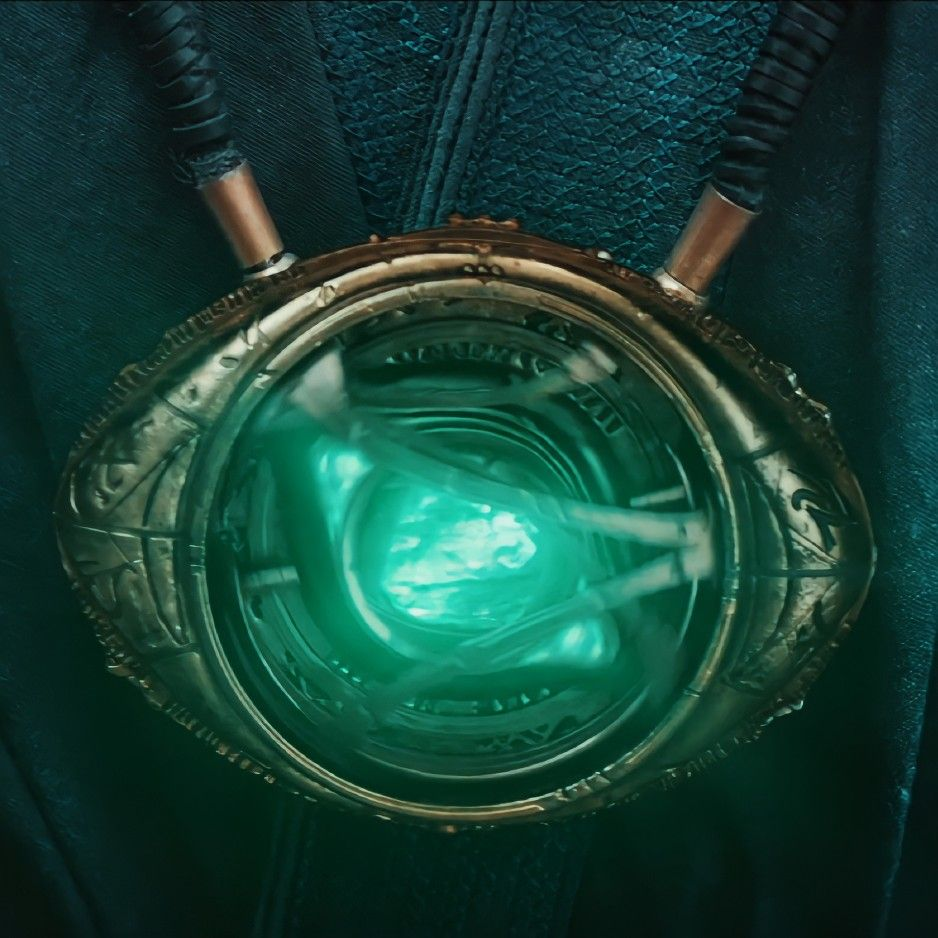
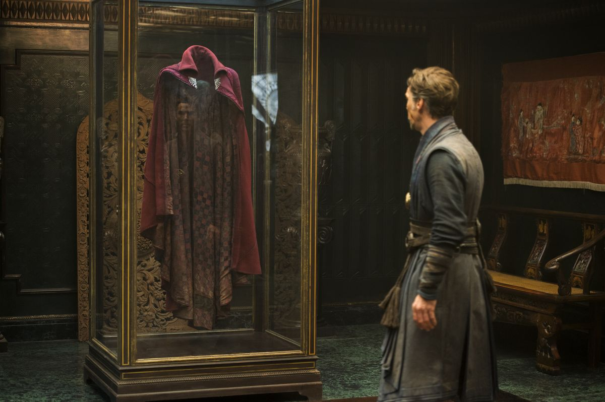
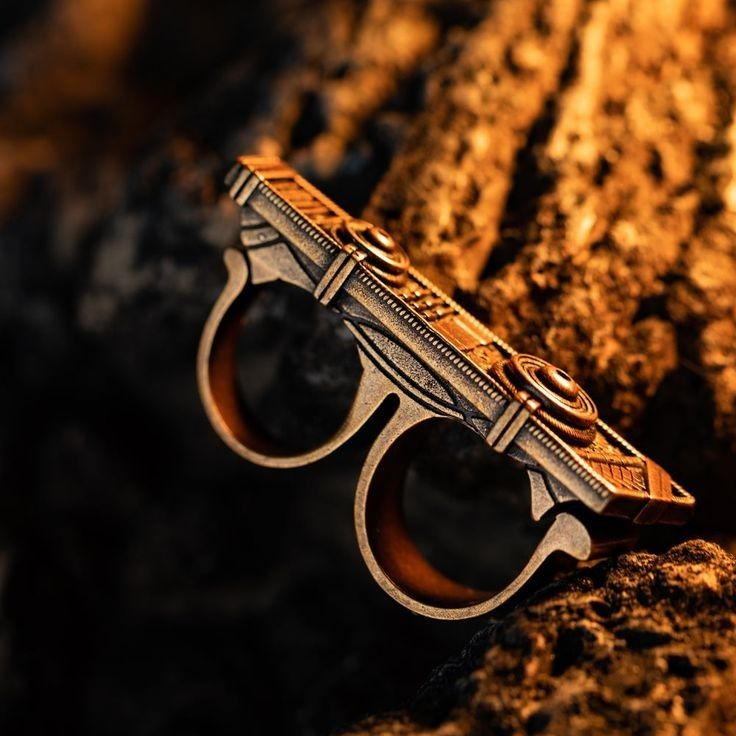
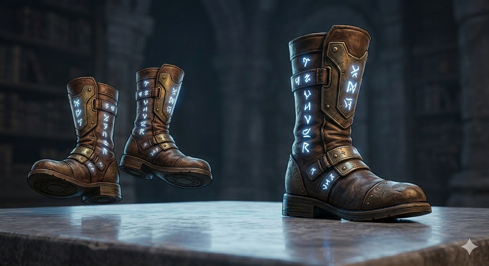
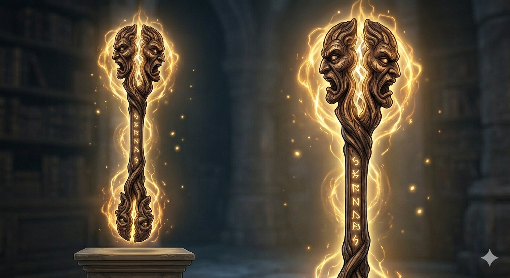

PERSONAJES PRINCIPALES
EL OJO DE AGAMOTTO

Es un antiguo relicario que contiene la Gema del Tiempo (una de las seis Gemas del Infinito). Permite a quien lo porta manipular el flujo del tiempo, pudiendo rebobinar eventos, crear bucles temporales o ver futuros posibles. Es el artefacto más poderoso custodiado por los Maestros de las Artes Místicas.CAPA DE LEVITACION

A diferencia de otros objetos, esta capa tiene conciencia propia y elige a su portador. Además de permitir que Strange vuele, tiene una personalidad leal y protectora; es capaz de luchar por sí sola, atrapar enemigos o incluso salvar a Stephen cuando está inconsciente.ANILLO DE HONDA (Sling Ring)

Es un anillo de dos dedos que todo hechicero debe usar para crear portales. Al realizar un movimiento circular con la mano, el anillo permite abrir un portal hacia cualquier lugar del Multiverso que el usuario pueda visualizar. Sin este objeto, los hechiceros quedarían atrapados en otras dimensiones.BOTAS DE VALTORR

Son un par de botas místicas utilizadas por el Maestro Mordo. Permiten al portador caminar sobre el aire y realizar saltos acrobáticos imposibles, "pisando" superficies invisibles en el espacio. Son ideales para el combate físico combinado con magia.EL BASTON DE WATOOMB

Es una reliquia poderosa que Wong utiliza durante la batalla final. Este bastón puede absorber energía mágica y liberarla como ráfagas de poder defensivo o de ataque, ayudando a estabilizar la realidad cuando las leyes de la física se rompen.